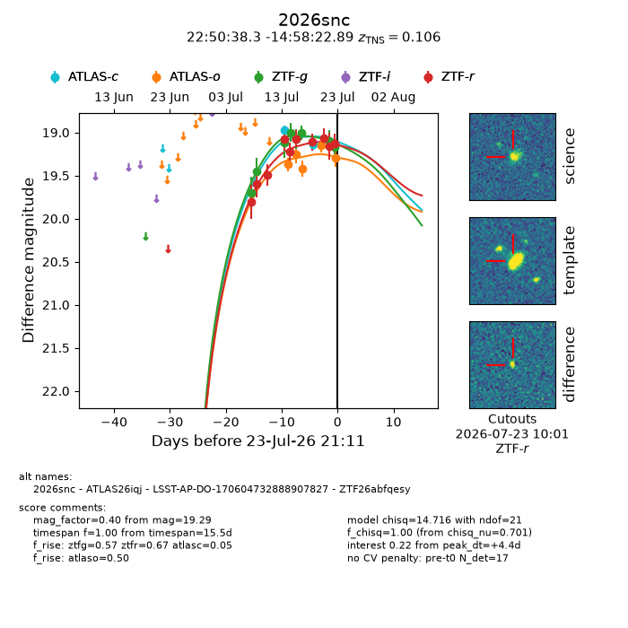
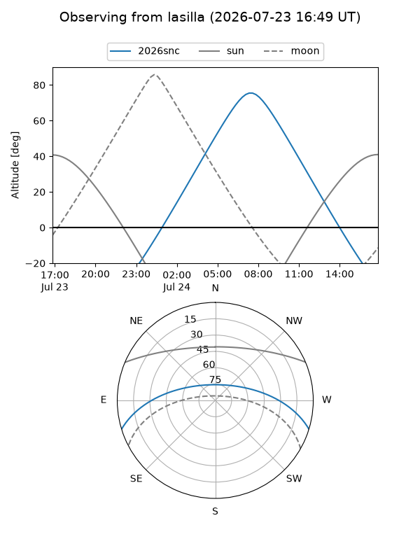
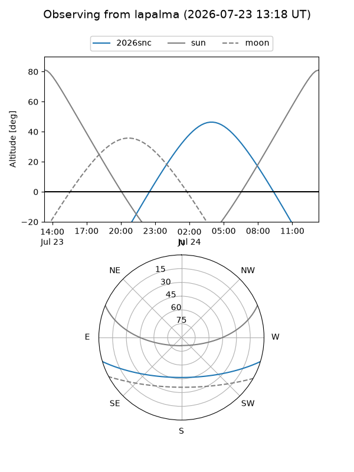
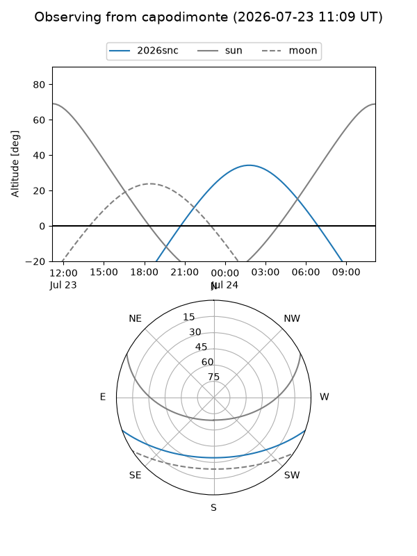
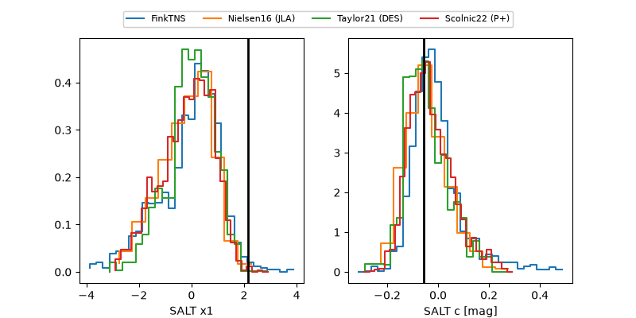

2026snc
Target 2026snc at 2026-07-23 21:14
Aliases and brokers:
FINK-ZTF: ztf.fink-portal.org/ZTF26abfqesy
Lasair-ZTF: lasair-ztf.lsst.ac.uk/objects/ZTF26abfqesy
ALeRCE-ZTF: alerce.online/object/ZTF26abfqesy
YSE-PZ: ziggy.ucolick.org/yse/transient_detail/2026snc
TNS name: wis-tns.org/object/2026snc
Direct TNS query: direct search
alt names
ZTF26abfqesy (ztf,fink_ztf)
2026snc (tns,yse)
LSST-AP-DO-170604732888907827 (iau_lsst)
ATLAS26iqj (atlas)
Coordinates:
equatorial (ra, dec) = 342.6596,-14.97303
equatorial (HMS+DMS) = 22:50:38.31,-14:58:22.89
galactic (l, b) = (50.1697,-59.41659)
Flags:
TNS type: SN Ia
TNS redshift: 0.1060
peak dt: +4.4
Photometry:
last atlasc=19.14, atlaso=19.29, ztfg=19.17, ztfr=19.12
2 atlasc, 5 atlaso, 8 ztfg, 10 ztfr detections
Lightcurve

Visibility



Additional plots
